ブラウザ版 MSX画像ビューア
各種MSX画像を表示・変換保存可能なツールです。
ローカル実行用ファイル一式をダウンロード・展開して使用するのをお勧めします。
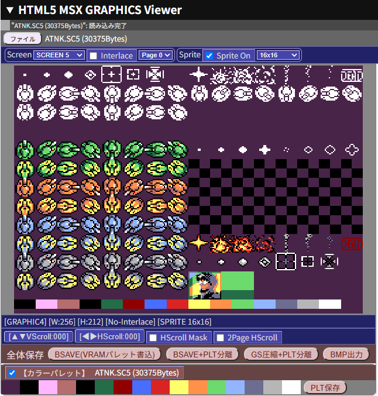
vram2bmp ファイル名.bmp 0 256 1024で保存したBMPに対応メインターゲットはスクリーン5～12のMSX画像でしたが、結局SCREEN0～4のMSX画像も一通り対応しています。
HTML5+javascript ES6の勉強+遊びの為に作成しているので、いつの間にか遊び機能が増えていくかもしれません。
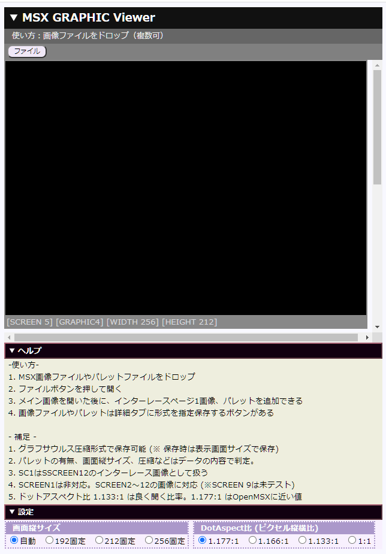
ファイルをウィンドウにドロップするか、
ファイルボタンでファイルを開いてください。
インターレースモード用画像かどうかは拡張子で判定されます。
（拡張子一覧）
メイン画像ファイルと判定されると、読み込み済みファイルリストと画面をクリアしてから読み込みます。
その為、複数ファイルで構成された画像の場合は順番に開く必要があります。
順番は
です。
この順番でドロップするか、まとめてドロップしてください。
まとめてドロップした場合は自動的に読み込む順番を整えて読み込みます。
この時、1～3の分類それぞれにつき、各1個だけ読み込みます。
また、ファイルボタンから開くことも可能です。
（その場合も複数ファイル指定可能です）
グラフサウルスでCOMPRES保存した画像形式に対応しています。
ローダーのサンプルは https://github.com/uniskie/MSX_MISC_TOOLS/tree/main/LOADSRD にありますが、Javascriptで見た方が分かりやすいかと思ったのが、このビューアーが生まれるきっかけでした。
ビューアー・ローダーともに、 ソースコードの再利用はご自由にどうぞ。
ただし、画像ファイルの再利用はご遠慮ください。
スクリーン0～4ではキャラクタジェネレータ欄が表示されます。
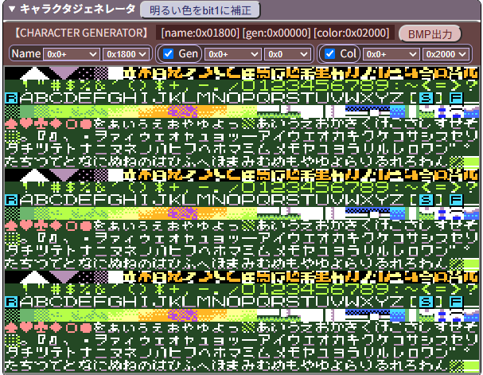
スクリーン1～12ではスプライト欄が表示されます。
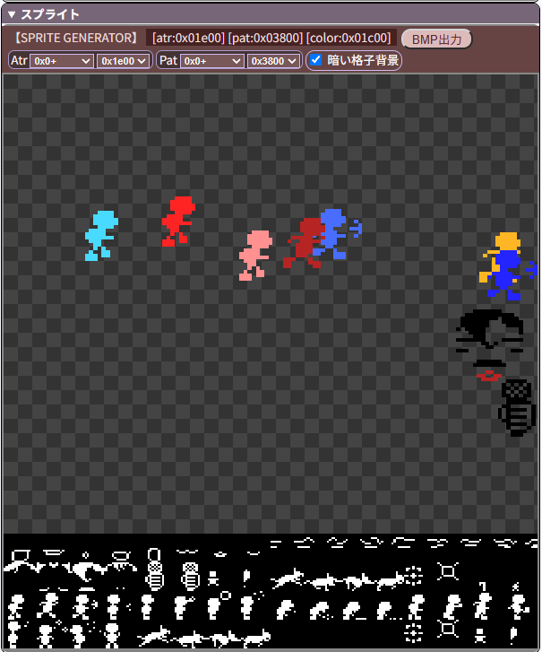
VDPで設定可能な値がドロップダウンリストに登録されていますので、そこから選択可能です。
※ SPRCOL (スプライトカラーテーブル) はSPRATR (スプライトアトリビュートテーブル) - 512にVDPが自動決定します。
読み込み済みファイルがあればベタデータ保存・圧縮保存が可能です。
また、表示されている画像を右クリックすると、ブラウザの機能を使ってPNGなどの画像として保存できます。
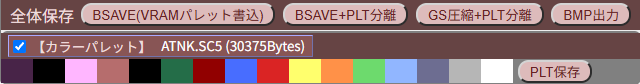
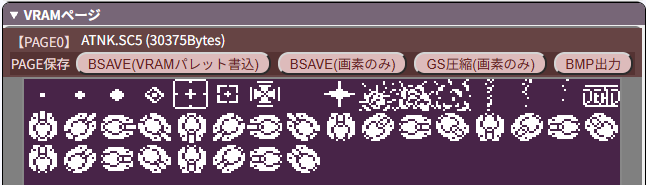
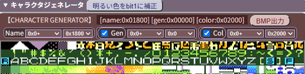
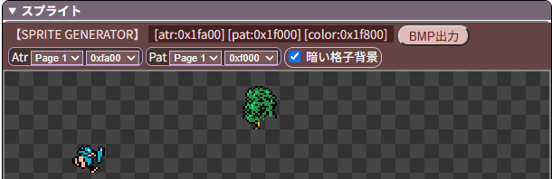
| ボタン名 | 説明 | 補足 |
|---|---|---|
| PLT保存 | カラーパレットデータを保存します | グラフサウルスと違い、スロット1本分の32バイトのファイルです。 |
| BSAVE (VRAMパレット書込) | VRAMカラーパレットテーブル含めてBSAVEベタ形式保存 | VRAMパレットテーブルに現在のパレットを書き込みます。保存サイズがVRAMパレットテーブルより小さければ、テーブルを含む領域まで保存します。 |
| BSAVE (画素のみ) | カラーパレットを含まない BSAVEベタ形式保存 | VRAMパレットテーブルにパレットを書き込みません。VRAMパレットテーブルを考慮せず、ピクセルデータの範囲までを保存します。 |
| GS圧縮 (画素のみ) | カラーパレットを含まない グラフサウルス圧縮形式保存 | VRAMパレットテーブルにパレットを書き込みません。VRAMパレットテーブルを考慮せず、ピクセルデータの範囲までを保存します。 |
| BMP出力 | BMPファイルとして書き出し | SCREENモードがインデックスカラーであればなるべくインデックスカラーで保存。SCREEN8はフルカラー（スプライトが違うパレットなので）/VRAMページなら256色で保存 |
| GS圧縮 (画素のみ) | カラーパレットを含まない グラフサウルス圧縮形式保存 | VRAMパレットテーブルにパレットを書き込みません。VRAMパレットテーブルを考慮せず、ピクセルデータの範囲までを保存します。 |
| PLT保存 | カラーパレットデータを保存します | グラフサウルスと違い、スロット1本分の32バイトのファイルです。 |
BLOADで読み込むときに、サイズ&hFFFFを越えるファイルは読みだしたデータが化けます。
例)
START=0, END=FFFFを越えるファイル
ファイル全体では&h10007バイト以上
- VRAM全体セーブ
- SCREEN7,8,10,12での1ページ丸ごと保存
そのため、BSAVEファイルヘッダのENDエントリはサイズが&hFFFFを越えない値を書き出します。 ファイル自体は最後まで書き込まれまます。
例)
VRAM全体セーブ
START=0, END=FFFE→START=0, END=FFFE
実際にファイルに書きだされるVRAMの範囲は&h0000～&hFFFF
ファイル全体のサイズは&h10007バイトSCREEN7,8,10,12での1ページ丸ごと保存
START=0, END=FFFE→START=0, END=FFFE
実際にファイルに書きだされるVRAMの範囲は&h0000～&hFFFF
ファイル全体のサイズは&h10007バイト
この対策によりデータは化けなくなりますが
BLOADでは&h0000～&hFFFEまでしか読み込めません。
全体を読みだしたいときは独自のローダーを使用し、
ファイルサイズを見て読みだすようにすれば、
データの最後まで読み込むことが出来ます。
( https://github.com/uniskie/MSX_MISC_TOOLS/tree/main/LOADSRD など)
0000H-FFFEHですが、実ファイルサイズはそれを超える128KBを出力します）全体出力の表示範囲は読み込んだファイル形式に関係なく、画面イメージになります。
どの画面モードでも横512、縦2倍での出力です。
最大サイズであるインターレースモード、横512ドットモードに合わせて拡大されます。
ドットアスペクト比は1:1で出力します。
可能な限りインデックスカラーで出力します。 無理な場合は32ビットカラーで出力します。
ただし、RGB888での表示用レンダリングバッファから、 パレット逆引きでインデックスカラーに戻すので、 パレットに同一色がある場合は正確な出力とはなりません。
画像の読み込みが終わった後に指定の形式で自動保存するオプション
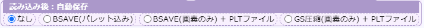
| 形式 | 内容 | パレットデータ |
|---|---|---|
| BSAVE(VRAMパレット書込) | BSAVE形式（VRAMカラーパレットテーブルを含む）画像ファイル | BSAVEファイルに含む |
| BSAVE+PLT分離 | BSAVE形式（VRAMカラーパレットテーブルを含まない）画像ファイルと、PLTファイルのセット | PLTファイル |
| GS圧縮+PLT分離 | グラフサウルス圧縮形式画像ファイルと、PLTファイルのセット | PLTファイル |
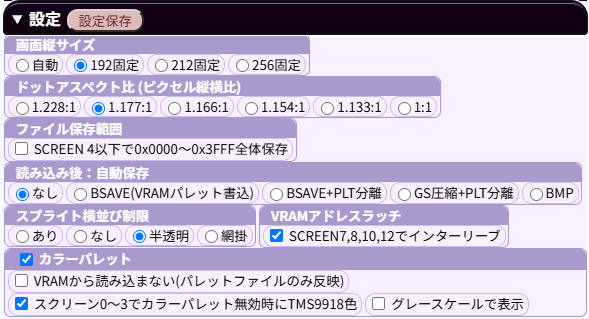
表示や動作に関する各種設定をまとめて保存、読み込み出来ます。
保存時には gsrle_html_config.json というJSONファイルが保存されます。
任意の名前.jsonに変更して保管しておくと、必要なときに素早く設定を変更できます。
読み込み時はJSONファイルを開くかドロップしてください。
対象となる設定内容：
openMSXではvram2bmpでVRAM全体のRAWファイルに相当するBMPファイルを出力できます。
vram2bmp ファイル名.bmp 0 256 1024でVRAM全体保存
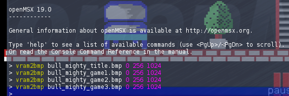
Note: 保存先について
カレントフォルダは 基本的にOpenMSXを起動した実行ファイルと同じ場所になっています。
- OpenMSX Catapultから実行した場合は
OpenMSX\Catapult\bin- openmsx.exeを直接実行した場合は
OpenMSX\cd（チェンジディレクトリ）コマンドでカレントディレクトリを変えておくとファイルが整理しやすくて良いかもしれません。Note: 保存先の変更例
マイドキュメント\openMSX\にbmpフォルダを作成- コンソールから
cd $env(OPENMSX_USER_DATA)/bmp→ マイドキュメント\openMSX\bmp\ に保存されるようになる
openMSX起動時に自動的に実行されるスクリプトに
cd $env(OPENMSX_USER_DATA)を書いておけば良いかもしれません。
（自分はユーザーフォルダに自動実行スクリプトを配置する方法が分からないのでやっていません）
vram2bmpで保存されるのはRAWイメージなので普通のBMPとして表示すると実際の画面に表示されている映像とは異なる見た目になります。
当ビューアではそのVRAM RAWイメージを読み込んで、MSX上での見え方で表示することが可能です。
（画面モードや、ベースアドレスは自分で指定してください）
自分向け遊び機能ですが、内容確認などの使い道はあるかもしれません。
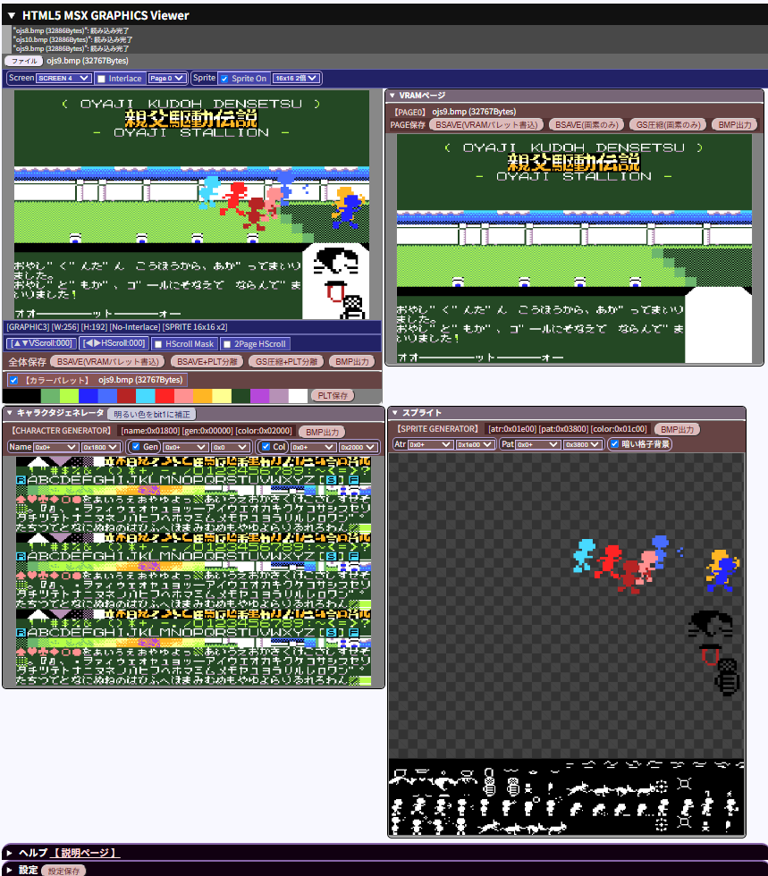
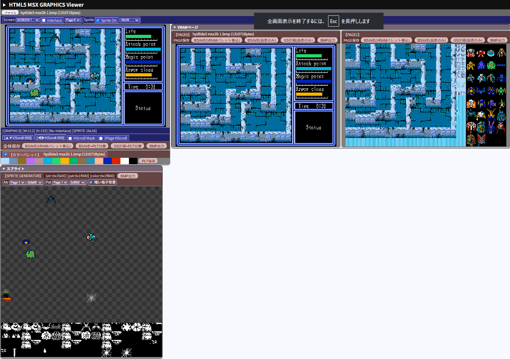
HYDLIDE3 (C) T&E SOFT / D4 Enterprise
VDPシミュレートの検証で付けている処理です。
▲▼VScroll
縦スクロールスイッチ
スプライトごと移動する
◀▶HScroll
横スクロールスイッチ
スプライトは影響をうけない
HScroll Mask
画面左に8ドット幅の周辺色マスクを表示する
スプライトもマスクされる
2Page HScroll
VDP R#25 bit0：2画面横スクロール
表示ページは奇数を指定する
1ページのVRAMサイズ
0x80000x10000インターレースモードで2ページをフリップさせて疑似的に424ライン表示する機能
Interlaceにチェックを付けるとインターレース＆フリップモードになります。
市販ソフトではDPSSGがSCREEN7で使用して、VGAに近い解像度を実現していました。
※ SCREEN0～4では使用できません
※ 2Page HScrollと同様に強制的に表示ページを奇数ページに変更します。
拡張子で判定して、インターレースモードでの読込先ページを決定します。
| 拡張子 | SCREEN番号 | インターレースモード | BSAVE拡張子 | GS拡張子 | 補足 |
|---|---|---|---|---|---|
| .SC5 | SCREEN 5 | non-interlace | .SC5 | .SR5 | BSAVE |
| .SC6 | SCREEN 6 | non-interlace | .SC6 | .SR6 | BSAVE |
| .SC7 | SCREEN 7 | non-interlace | .SC7 | .SR7 | BSAVE |
| .SC8 | SCREEN 8 | non-interlace | .SC8 | .SR8 | BSAVE |
| .S10 | SCREEN 10 | non-interlace | .S10 | .SRA | BSAVE |
| .S12 | SCREEN 12 | non-interlace | .S12 | .SRC | BSAVE |
| .SR5 | SCREEN 5 | non-interlace | .SC5 | .SR5 | GRAPH SAURUS |
| .SR6 | SCREEN 6 | non-interlace | .SC6 | .SR6 | GRAPH SAURUS |
| .SR7 | SCREEN 7 | non-interlace | .SC7 | .SR7 | GRAPH SAURUS |
| .SR8 | SCREEN 8 | non-interlace | .SC8 | .SR8 | GRAPH SAURUS |
| .SRA | SCREEN 10 | non-interlace | .S10 | .SRA | GRAPH SAURUS |
| .SRC | SCREEN 12 | non-interlace | .S12 | .SRC | GRAPH SAURUS |
| .SRS | SCREEN 12 | non-interlace | .S12 | .SRS | GRAPH SAURUS |
| 拡張子 | SCREEN番号 | インターレースモード | BSAVE拡張子 | GS拡張子 | 補足 |
|---|---|---|---|---|---|
| .S50 | SCREEN 5 | interlace page:0 | .S50 | .R50 | BSAVE interlace |
| .S51 | SCREEN 5 | interlace page:1 | .S51 | .R51 | BSAVE interlace |
| .S60 | SCREEN 6 | interlace page:0 | .S60 | .R60 | BSAVE interlace |
| .S61 | SCREEN 6 | interlace page:1 | .S61 | .R61 | BSAVE interlace |
| .S70 | SCREEN 7 | interlace page:0 | .S70 | .R70 | BSAVE interlace |
| .S71 | SCREEN 7 | interlace page:1 | .S71 | .R71 | BSAVE interlace |
| .S80 | SCREEN 8 | interlace page:0 | .S80 | .R80 | BSAVE interlace |
| .S81 | SCREEN 8 | interlace page:1 | .S81 | .R81 | BSAVE interlace |
| .SA0 | SCREEN 10 | interlace page:0 | .SA0 | .RA0 | BSAVE interlace |
| .SA1 | SCREEN 10 | interlace page:1 | .SA1 | .RA1 | BSAVE interlace |
| .SC0 | SCREEN 12 | interlace page:0 | .SC0 | .RC0 | BSAVE interlace |
| .SC1 | SCREEN 12 | interlace page:1 | .SC1 | .RC1 | BSAVE interlace |
| .R50 | SCREEN 5 | interlace page:0 | .S50 | .R50 | GRAPH SAURUS interlace |
| .R51 | SCREEN 5 | interlace page:1 | .S51 | .R51 | GRAPH SAURUS interlace |
| .R60 | SCREEN 6 | interlace page:0 | .S60 | .R60 | GRAPH SAURUS interlace |
| .R61 | SCREEN 6 | interlace page:1 | .S61 | .R61 | GRAPH SAURUS interlace |
| .R70 | SCREEN 7 | interlace page:0 | .S70 | .R70 | GRAPH SAURUS interlace |
| .R71 | SCREEN 7 | interlace page:1 | .S71 | .R71 | GRAPH SAURUS interlace |
| .R80 | SCREEN 8 | interlace page:0 | .S80 | .R80 | GRAPH SAURUS interlace |
| .R81 | SCREEN 8 | interlace page:1 | .S81 | .R81 | GRAPH SAURUS interlace |
| .RA0 | SCREEN 10 | interlace page:0 | .SA0 | .RA0 | GRAPH SAURUS interlace |
| .RA1 | SCREEN 10 | interlace page:1 | .SA1 | .RA1 | GRAPH SAURUS interlace |
| .RC0 | SCREEN 12 | interlace page:0 | .SC0 | .RC0 | GRAPH SAURUS interlace |
| .RC1 | SCREEN 12 | interlace page:1 | .SC1 | .RC1 | GRAPH SAURUS interlace |
| 拡張子 | SCREEN番号 | インターレースモード | BSAVE拡張子 | GS拡張子 | 補足 |
|---|---|---|---|---|---|
| .TX1 | SCREEN 0 WIDTH 40 | non-interlace | .TX1 | .TX1 | BSAVE / GS |
| .TX2 | SCREEN 0 WIDTH 80 | non-interlace | .TX2 | .TX2 | BSAVE / GS |
| .GR1 | SCREEN 1 | non-interlace | .GR1 | .GR1 | BSAVE / GS |
| .SR0 | SCREEN 0 WIDTH 40 | non-interlace | .SR0 | .SR0 | BSAVE / GS |
| .SR1 | SCREEN 1 | non-interlace | .SR1 | .SR1 | BSAVE / GS |
| .SC2 | SCREEN 2 | non-interlace | .SC2 | .SR2 | BSAVE |
| .SC3 | SCREEN 3 | non-interlace | .SC3 | .SR4 | BSAVE |
| .SC4 | SCREEN 4 | non-interlace | .SC4 | .SR3 | BSAVE |
| .SR2 | SCREEN 2 | non-interlace | .SC2 | .SR2 | GRAPH SAURUS |
| .SR4 | SCREEN 3 | non-interlace | .SC3 | .SR4 | GRAPH SAURUS |
| .SR3 | SCREEN 4 | non-interlace | .SC4 | .SR3 | GRAPH SAURUS |
| 拡張子 | SCREEN番号 & インターレースモード | BSAVE拡張子 | GS拡張子 | 補足 |
|---|---|---|---|---|
| .BIN | 現在の画面モード | .BIN | .BIN | 汎用 |
| .VRM | 現在の画面モード | .VRM | .GSR | BSAVE RAWイメージ - 新10倍で読み込み変換したもの等 |
| .SPR | 現在の画面モード | .SPR | .SPR | スプライト |
| .SPC | 現在の画面モード | .SPC | .SPC | スプライトカラー |
| .NAM | 現在の画面モード | .NAM | .NAM | SC2 パターンネーム |
| .COL | 現在の画面モード | .COL | .COL | SC2 パターンカラー |
| .GEN | 現在の画面モード | .GEN | .GEN | SC2 パターンジェネレータ |
| .PAT | 現在の画面モード | .PAT | .PAT | SC2 パターンジェネレータ |
| .NM | 現在の画面モード | .NM' | .NM' | SC2 パターンネーム |
| .CL | 現在の画面モード | .CL' | .CL' | SC2 パターンカラー |
| .GN | 現在の画面モード | .GN' | .GN' | SC2 パターンジェネレータ |
| .CL0 | 現在の画面モード | .CL0 | .CL0 | SC2 パターンカラー |
| .CL1 | 現在の画面モード | .CL1 | .CL1 | SC2 パターンカラー |
| .CL2 | 現在の画面モード | .CL2 | .CL2 | SC2 パターンカラー |
| .GN0 | 現在の画面モード | .GN0 | .GN0 | SC2 パターンジェネレータ |
| .GN1 | 現在の画面モード | .GN1 | .GN1 | SC2 パターンジェネレータ |
| .GN2 | 現在の画面モード | .GN2 | .GN2 | SC2 パターンジェネレータ |
| 拡張子 | SCREEN番号 & インターレースモード | BSAVE拡張子 | GS拡張子 | 補足 |
|---|---|---|---|---|
| .BMP | 現在の画面モード | .SCR | .GSR | BMPヘッダ+RAWイメージ - OpenMSX vram2bmp の非圧縮BMP |
| .SCR | 現在の画面モード | .SCR | .GSR | RAWイメージ |
| .GSR | 現在の画面モード | .SCR | .GSR | RAWイメージ |
| 拡張子 | SCREEN番号 & インターレースモード | BSAVE拡張子 | GS拡張子 | 補足 |
|---|---|---|---|---|
| .CPY | 現在の画面モード | .VRM | .GSR | 範囲画像（BASIC COPY文） |
| .CP5 | SCREEN 5 | .VRM | .GSR | 範囲画像（BASIC COPY文） |
| .CP6 | SCREEN 6 | .VRM | .GSR | 範囲画像（BASIC COPY文） |
| .CP7 | SCREEN 7 | .VRM | .GSR | 範囲画像（BASIC COPY文） |
| .CP8 | SCREEN 8 | .VRM | .GSR | 範囲画像（BASIC COPY文） |
| .CPA | SCREEN 10 | .VRM | .GSR | 範囲画像（BASIC COPY文） |
| .CPC | SCREEN 12 | .VRM | .GSR | 範囲画像（BASIC COPY文） |
| .GL5 | SCREEN 5 | .VRM | .CPR | 範囲画像（BASIC COPY文/グラフサウルス拡張子） |
| .GL6 | SCREEN 6 | .VRM | .CPR | 範囲画像（BASIC COPY文/グラフサウルス拡張子風） |
| .GL7 | SCREEN 7 | .VRM | .CPR | 範囲画像（BASIC COPY文/グラフサウルス拡張子） |
| .GL8 | SCREEN 8 | .VRM | .CPR | 範囲画像（BASIC COPY文/グラフサウルス拡張子） |
| .GLA | SCREEN 10 | .VRM | .CPR | 範囲画像（BASIC COPY文/グラフサウルス拡張子風） |
| .GLC | SCREEN 12 | .VRM | .CPR | 範囲画像（BASIC COPY文/グラフサウルス拡張子風） |
| .GLS | SCREEN 12 | .VRM | .CPR | 範囲画像（BASIC COPY文/グラフサウルス拡張子） |
本ツールにはMSX画像形式からの圧縮や展開のみをサポートしています。
PNGなどからの変換（読み込み）機能が欲しい場合は他のツールを使用してください。
(※vram2bmpで保存したbmpはVRAMのRAWイメージなので特別にそのまま表示可能です。)
BMP to MSX
自分が良く使用しているのは、hra1129さんの変換ツール BMP to MSX です。
https://github.com/hra1129/bmp2msx
その他ツール紹介ページ
Gigamax Online Webアプリ多め！ネットで見つけたMSX向け画像編集ツールまとめ
縦横比は、当時のCRT環境によってまちまちではありますが、幾つかの候補について分かっている情報を補足します。
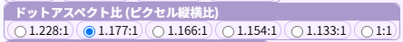
openMSXの**Horisontal stretch**で設定するなら **272 (Realistic)**。
Panasonic FS-A1GTのS端子出力をGV-USB2（映像キャプチャ）で取り込んで4:3表示した映像と一致。
openMSXのHorisontal stretchで設定するなら 274。
MSXのカラーサブキャリア（3.579545MHz）とドットクロック（5.3693175MHz）の比率（ちょうど1.5倍）から導き出される値。
約1.15～約1.17で諸説あり、一旦、中間値を採用した物。
MSXの解像度をそのまま4:3を覆うように広げた形。 当時そのような基準で調整していた人が多いかもしれない。
openMSXのHorisontal stretchで設定するなら 277
TomHさんの計算をもとにした設定値。
TSCラインは227.5カラークロックの長さで、これは水平同期間の周期です。TMSとV99x8はどちらも水平同期間のカラークロックは228"
256サイクルのピクセル、1ピクセルあたり2/3の色サイクルは、ライン全体の75%に非常に近いピクセル数です。つまり、各ピクセルはラインの1/(227.5 * 1.5)です。ラインの約52/64が見えるということは、64 / (227.5 * 1.5 * 52) = 64 / 17745となります。"
(4 * (64 / 17745)) / (3 * (1 / 240)) ≒ 1.154127923358693
openMSXの**Horisontal stretch**で設定するなら **282**か**283**
FRS氏の計算を元にした設定値。
- 480i（240p）のラインのみが描画されます。そのため、V99x8がレンダリングする3ライン分はオーバースキャンとして画面からはみ出します。
- 1ラインの画像周期はちょうど52.6マイクロ秒です。これより後に送信されるピクセルはオーバースキャンとして画面からはみ出します。
V99x8では、leftBorder+ActiveArea+rightBorder = 1139サイクル = 53.03281μSec
右境界の最後の 4.647799 ピクセルがオーバースキャンとして画面から外れてしまいます
(4 ÷ 564.8522) ÷ (3 ÷ 480) = 1.133039756
他にPAL信号をベースに計算した1.1375:1(1:0.879)という説もあるようです。
（openMSXのHorisontal stretchで設定するなら 281か282）
284.75ピクセル×243ラインは4:3のアスペクト比に収まらなければならないので、(284.75:4) : (243:3) ≈ 1.1375:1 となります。
(284.75:4) : (243:3) ≈ 1.1375:1
openMSXの**Horisontal stretch**で設定するなら **320**。
いわゆるドットバイドット。
モアレを除去したい場合に利用することがあるので用意。
現在、リストからの選択になっています。
要望が在れば任意の値を指定できるようにするかもしれませんが、各自でgsrle.htmlを弄って頂いた方が早いかと思います。
画像ファイル以外のHTML、CSS、JSファイルはご自由に利用してください。
改変も自由です。
著作権表示なども不要です。
音楽データや画像ファイルの再利用は禁止とします。（全体に）
このツールの使用による問題が起きた場合に、当方は責任を負わないものとします。
また、転載や改変をされたものついて当方ではサポート致しません。
2026/08/25 ver.0.33
2026/02/02 ver.0.32
2026/01/01 ver.0.31
2026/01/01 ver.0.30
2025/01/11 ver.0.29
2023/10/07 ver.0.28
2023/10/05 ver.0.27
2023/09/20 ver.0.26
2023/09/18 ver.0.25
2023/09/17 ver.0.24b
2023/09/16 ver.0.24
2023/09/15 ver.0.23
2023/09/15 ver.0.22
2023/09/13 ver.0.21
2023/09/11 ver.0.20
2023/09/11 ver.0.19
2023/09/10 ver.0.18
2023/09/09 ver.0.17
2023/09/09 ver.0.16
2023/09/09 ver.0.15
2023/09/09 ver.0.14
2023/09/09 ver.0.13
2023/09/08 ver.0.12
VRAM2bmp filename.bmp 0 256 1024 として保存したBMPに対応
（画面モードやベースアドレスは自分で指定）2023/09/05
それ以前